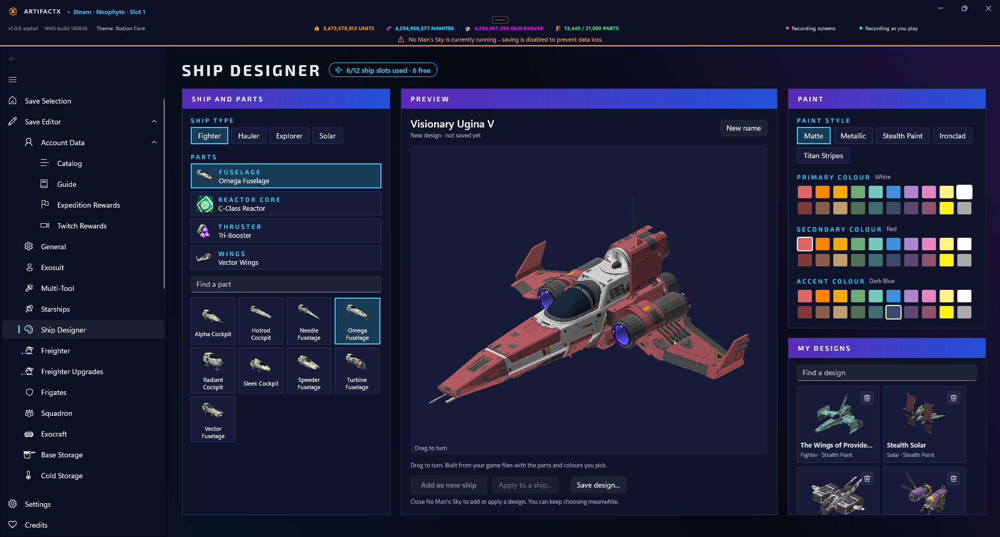

The modern, safe companion for No Man's Sky
Inspect and edit starships, multi-tools, freighters, companions, and base inventory. Explore procedural galaxy data, crash sites, and cabinet pools without risking your save files.

Built for Travellers, backed by mathematics
ArtifactX reconstructs No Man's Sky's internal procedural rules to calculate exact stats, predict equipment availability, and render 3D ships directly from your game data.
Starships & Fleet
Real-time 3D model previews, procedural ship name resolution, and class upgrades that actually adjust intrinsic stats and supercharged layouts.
- Procedural 3D model generator from seed & scene
- Part-by-part Ship Designer with custom paint
- Storage Hangar long-term archive viewer
- Squadron pilot stats & authentic starship previews
- Full loadout templates and exportable shares
Multi-Tool Cabinets
Never miss an S-Class cabinet again. See exactly which multi-tools every Space Station and Minor Settlement sells based on your reload location.
- Station & planet reload pool prediction
- Seed-based classifier (Alien, Experimental, Sentinel, Royal)
- 3D tool preview & procedural game names
- Supercharged slot arrangements & bonus stat calculators
Planetary Exploration
Discover crash sites, settlements, and portal glyphs before you even land on a planet. True coordinates calculated without visiting.
- Planetary crash site locator (S-Class & Sentinel ships)
- 12-glyph portal code & galactic coordinate translator
- Minor Settlement shop finder with Analysis Visor coordinates
- Region 3D star map & unvisited system counters
- Fauna, flora, and mineral discovery checklists
Companions & Egg Sequencer
Predict the exact outcome of egg gene sequencing before hatching. View your companions' species names and tweak custom attributes.
- Egg Sequencer dosage and trait predictor
- Gentleness, aggression, helpfulness, and size effects
- Companion archetype and part customizer
- Wild fauna and battle creature statistics
Almanac & Recipes
Interactive recipe planner for cooking and nutrient processing, refiners, crafting trees, and Organic Frigate feeding guides.
- Full cooking, refiner, and manufacturing recipe trees
- Organic Frigate Feed Vessel optimizer (stat changes per food)
- "Add ingredients to Exosuit" one-click button
- Item values, fish catch records, and personal records
Settlements & Bases
Manage your Planetary Settlement's debt, production, policy flags, and construction status. Inspect base parts against the game build limits.
- Settlement debt, revenue, and citizen happiness controls
- Base construction part counts against game limits
- Base storage container contents and resource links
- Exocraft customisation and technology unblockers
Engineered for absolute save safety
Your saves represent hundreds of hours of exploration. ArtifactX enforces multi-layered guardrails so your game data is never placed at risk.
🔒 Game-Running Lock
ArtifactX actively monitors No Man's Sky and blocks saving whenever the game is running, preventing write collisions and file corruption.
💾 Staged Non-Destructive Edits
Changes are held in memory in a staged state. Nothing touches disk until you click Save, and any change can be reverted with one click.
📦 Automatic Timestamped Backups
Every write to a save slot or account data file automatically creates a timestamped backup copy. One-click restore pickers let you roll back anytime.
🛡️ Protected User Data
Personal notes, captured findings, and templates live in a separate user database that in-app updates and catalog rebuilds never overwrite.
Download ArtifactX v1.0.0
Free, open-source, and updated for the latest version of No Man's Sky. Choose the installation format that suits your setup.
Windows Setup (.exe)
Standard desktop installer powered by Velopack with automatic background update detection.
MSI Package (.msi)
Enterprise-friendly Windows Installer package suitable for managed workstations.
Portable Archive (.zip)
Extract anywhere and run directly without an installation footprint.
System Requirements
| Operating System | Windows 10 64-bit (Build 19041 or higher) or Windows 11 |
|---|---|
| Platform Support | Steam, GOG, and PC Game Pass / Microsoft Store installs of No Man's Sky |
| Runtime | Self-contained .NET 10 & WinUI 3 (Windows App SDK) — no extra downloads needed |
| Display | Optimized for standard desktop resolutions; High-DPI and screen-reader accessible |